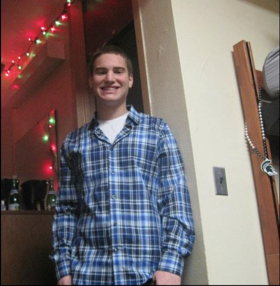
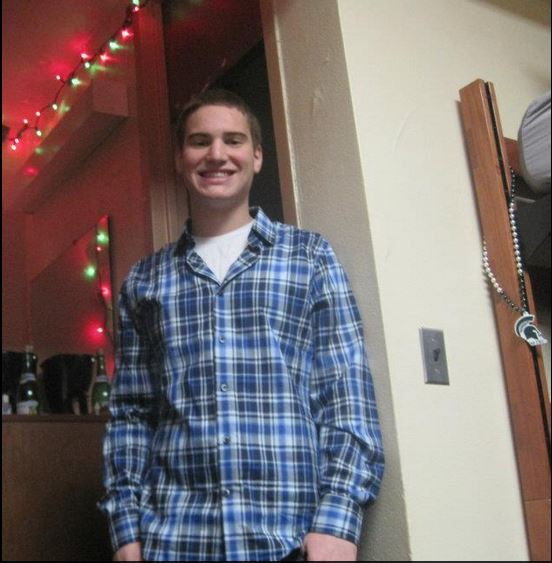

About Me!
Contact Information
- Mark Genchanok
- Email: genchano@msu.edu
- Phone: (224) 944-7533
Bio:
I am going to be a senior at Michigan State University. My area of study is Media and Information in the College of Communication Arts and Sciences. I originally studdied electrical engineering but I didn't have much interest in it. Now I plan to work in the field of information technology. I have already worked as an assistant computer tech at the College of Social Work. Currently, I am a student tech for Information Services in the Residential and Hospitality Services department.